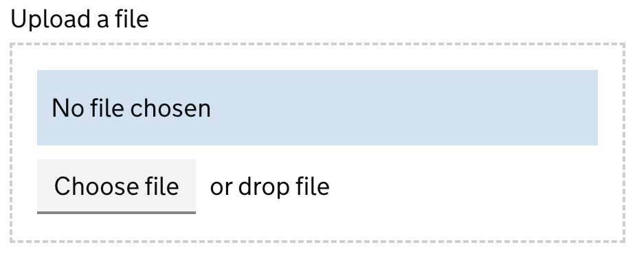
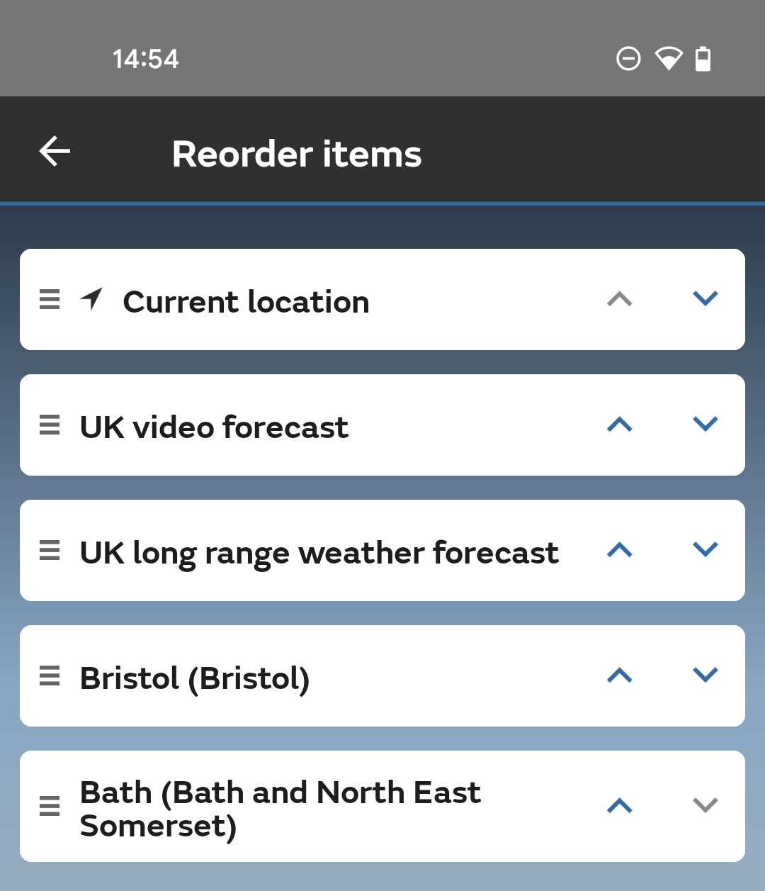
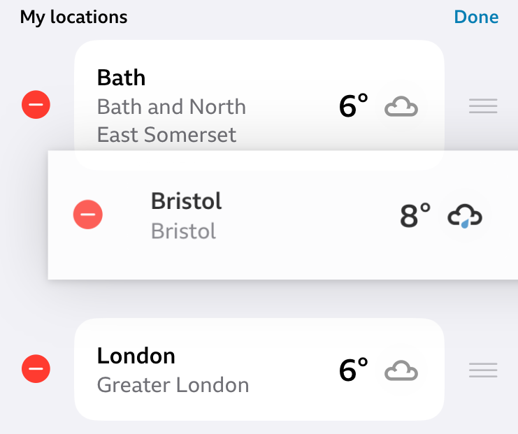

2.5.7 Dragging Movements (AA)
Don’t rely on the user having to drag something on their screen to complete a task.
What WCAG says:
All functionality that uses a dragging movement for operation can be achieved by a single pointer without dragging, unless dragging is essential or the functionality is determined by the user agent and not modified by the author.
Check the official guidance for Understanding 2.5.7 Dragging Movements
What this means
Don’t make users have to drag something across the screen to complete a task, without offering them another way of doing it. Dragging movements include things like drag and drop or sliders.
You can still offer actions which involve dragging, but you must offer another way for the user to do the action with a pointer (such as a mouse, stylus or touch contact).
This rule applies to any content in your website or app that you create. It doesn’t apply to things that are built into the user’s device or handled by their browser or assistive technology, such as scrolling the page or swiping between links.
Why it matters
Some people cannot use a mouse to drag items. They may use a device to help them, which can make dragging harder, such as:
- a trackball
- a head pointer
- voice control
To drag something, the user has to do four different things:
- tap or click a start point
- press and hold
- move their pointer
- release the pointer in the right place
Not everyone can press and hold while also moving their pointer.
By giving another way to complete the task, users with mobility impairments who use a pointer can also complete the task.
How to check
Look for anything that uses dragging movements - such as:
- drag and drop
- drag sorting
- sliders
- carousels - a selection of slides or options that allow users to move backwards and forwards
Where you find a dragging movement, check that it can also be done with a single pointer input, for example:
- drag and drop can also be done by point and click
- drag sorting can also be done with up and down buttons, or position number inputs
- sliders can be moved by clicking the track, or with left and right buttons
- carousels can include previous and next buttons, or slide number inputs.
Ignore any dragging movements that are:
- provided by the browser or operating system
- essential to the user’s task (such as a mobility test)
- part of a pointer gesture, where the user either has to follow a path or touch a device in more than one place - these fall under 2.5.1 Pointer Gestures (A) instead
How to test in detail for 2.5.7 Dragging Movements
Good examples
Uploading a file
In the GOV.UK Design System, the file upload component offers users two ways to upload a file.
To upload a file, the user can either:
- drag and drop a file into the file upload input area - this is a dragging movement
- select the ‘Choose file’ button - this could be done with a pointer

Reordering items with arrows
In the Met Office Weather Forecast App, users can either:
- drag their saved locations up and down on the screen to reorder them
- tap the up and down arrows next to the locations

Common mistakes
Reordering items with drag and drop
In this example, the only way to move the locations in a weather app is to drag and drop them into a new position. If the user cannot complete a dragging movement, they will not be able to reorder the locations.

This could be fixed by adding clickable up and down arrows next to each location so the user could move them without dragging.
Related success criteria
Dragging Movements relates to other criteria which help users navigate content in different ways.
- 2.1.1 Keyboard (A) - all functionality must also work with a keyboard (a keyboard alternative is not a way to pass Dragging Movements, because an alternative to dragging must be available using a pointer)
- 2.5.1 Pointer Gestures (A) - you must let users operate touchscreens with simple, one finger gestures.
Useful resources
Last updated
This page was last updated in April 2026.